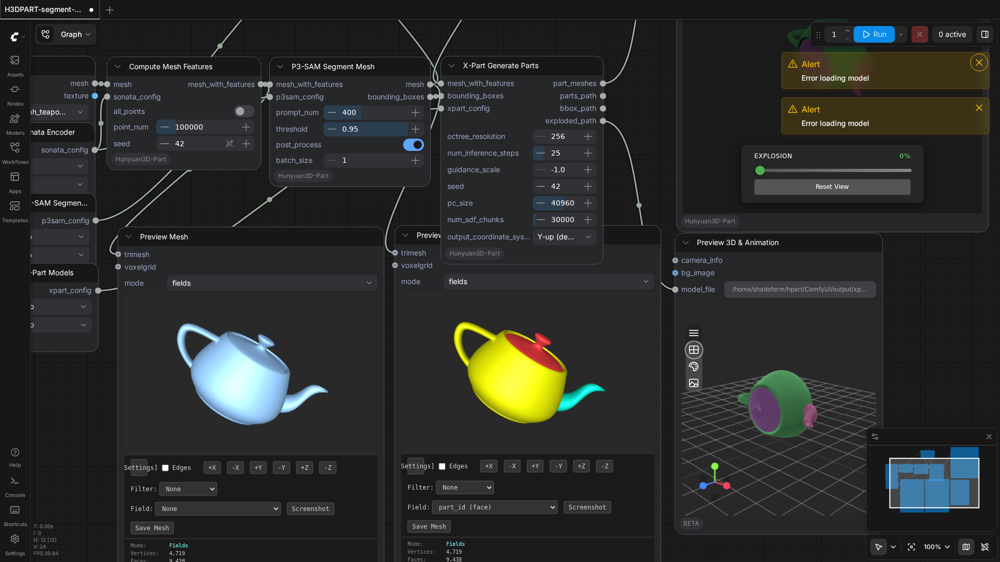

PozzettiAndrea/ComfyUI-Hunyuan3D-Part
Test Results
2026-05-21 13:38 UTC
Test run
Linux-6.8.0-107-generic-x86_64-with-glibc2.35
Intel(R) Xeon(R) CPU E5-2697 v4 @ 2.30GHz
NVIDIA GeForce RTX 3090
100.0%
1 passed
1/1 tests
Workflows
Grid
List

H3DPART-segment-partgen
pass
208.92s
Downloaded Models
8 files · 9.2 GB
models/hunyuan3d-part/
8.8 GB
model.safetensors
6.2 GB
conditioner.safetensors
1.6 GB
shapevae.safetensors
625.2 MB
p3sam.safetensors
430.1 MB
models/sonata/
413.9 MB
sonata.pth
413.9 MB
.cache/huggingface/CACHEDIR.TAG
191.0 B
.cache/huggingface/download/sonata.pth.metadata
125.0 B
.cache/huggingface/.gitignore
1.0 B
×
‹
›
0.0s / 0.0s
Resource Usage
RAM (GB)
VRAM (GB)